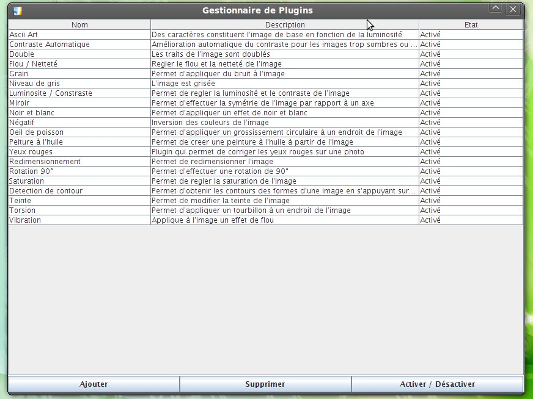

Plugins

Dans cette partie seront présenté les différentes utilisation des plugins
L'art ASCII consiste à réaliser des images uniquement à l'aide des lettres et caractères spéciaux contenus dans le code ASCII.
Exemple : Un petit fantôme
oooo$$$$$$$$$$$$oooo
oo$$$$$$$$$$$$$$$$$$$$$$$$o
oo$$$$$$$$$$$$$$$$$$$$$$$$$$$$$$o o$ $$ o$
o $ oo o$$$$$$$$$$$$$$$$$$$$$$$$$$$$$$$$$$$$o $$ $$ $$o$
oo $ $ "$ o$$$$$$$$$ $$$$$$$$$$$$$ $$$$$$$$$o $$$o$$o$
"$$$$$$o$ o$$$$$$$$$ $$$$$$$$$$$ $$$$$$$$$$o $$$$$$$$
$$$$$$$ $$$$$$$$$$$ $$$$$$$$$$$ $$$$$$$$$$$$$$$$$$$$$$$
$$$$$$$$$$$$$$$$$$$$$$$ $$$$$$$$$$$$$ $$$$$$$$$$$$$$ """$$$
"$$$""""$$$$$$$$$$$$$$$$$$$$$$$$$$$$$$$$$$$$$$$$$$$$$$$$$ "$$$
$$$ o$$$$$$$$$$$$$$$$$$$$$$$$$$$$$$$$$$$$$$$$$$$$$$$$$$ "$$$o
o$$" $$$$$$$$$$$$$$$$$$$$$$$$$$$$$$$$$$$$$$$$$$$$$$$$$$$ $$$o
$$$ $$$$$$$$$$$$$$$$$$$$$$$$$$$$$$$$$$$$$$$$$$$$$" "$$$$$$ooooo$$$$o
o$$$oooo$$$$$ $$$$$$$$$$$$$$$$$$$$$$$$$$$$$$$$$$$$$ o$$$$$$$$$$$$$$$$$
$$$$$$$$"$$$$ $$$$$$$$$$$$$$$$$$$$$$$$$$$$$$$$$$ $$$$""""""""
"""" $$$$ "$$$$$$$$$$$$$$$$$$$$$$$$$$$$" o$$$
"$$$o """$$$$$$$$$$$$$$$$$$"$$" $$$
$$$o "$$""$$$$$$"""" o$$$
$$$$o o$$$"
"$$$$o o$$$$$$o"$$$$o o$$$$
"$$$$$oo ""$$$$o$$$$$o o$$$$""
""$$$$$oooo "$$$o$$$$$$$$$"""
""$$$$$$$oo $$$$$$$$$$
""""$$$$$$$$$$$
$$$$$$$$$$$$
$$$$$$$$$$"
"$$$""
Dans ce plugin, l'image du centre représente une prévisualisation de l'effet qui sera appliqué à l'image
Pour diminuer la saturation de l'image il suffit de cliquer sur l'image de gauche
Pour augmenter la saturation de l'image il suffit de cliquer sur l'image de droite
Pour appliquer l'effet à l'image il suffit de cliquer sur l'image au centre
Pour revenir à l'image d'origine et donc ne pas appliquer l'effet il suffit de fermer la fenetre de travail du plugin, en cliquant sur la croix
Pour augmenter ou diminuer la luminosité ou le contraste il suffit de cliquer sur les boutons correspondants
Pour appliquer l'effet à l'image il suffit de cliquer sur l'image au centre
Pour revenir à l'image d'origine et donc ne pas appliquer l'effet il suffit de fermer la fenetre de travail du plugin, en cliquant sur la croix
Pour choisir le centre de l'effet il suffit de cliquer sur l'image de gauche, le centre de l'effet est représenté par la petite punaise
Le potentiometre permet de choisir le sens et l'angle de la rotation (vers la droite : angle négatif, vers la gauche : angle positif)
Pour appliquer l'effet à l'image il suffit de cliquer sur l'image a droite
Pour revenir à l'image d'origine et donc ne pas appliquer l'effet il suffit de fermer la fenetre de travail du plugin, en cliquant sur la croix
La premiere case représente la hauteur de l'image en pixel
La seconde représente la largeur de l'image en pixel
Pour garder le ratio de l'image il suffit de cocher la case
Pour appliquer l'effet à l'image il suffit de cliquer sur le bouton en bas, un nouvel onglet sera créé
Pour revenir à l'image d'origine et donc ne pas appliquer l'effet il suffit de fermer la fenetre de travail du plugin, en cliquant sur la croix
Dans le gestionnaire de plugins on retrouve le nom du plugin, la déscription de l'effet qu'il applique et si est activé ou désactivé
Il permet de :

Dans cette partie nous allons apprendre comment créer son propre puglin
/**
* Retourne le nom du plugin.
* @return
*/
public String getName();
/**
* Retourne le nom de l'auteur du plugin.
* @return
*/
public String getDescri();
/**
* Envoie si un plugin est activé ou non
*
* @return
*/
public boolean isEnabled();
/**
* Modification du boolean enabled
*
* @return
*/
public void setEnabled(boolean b);
/**
* Méthode qui prend en parametre une miniature de l'image courante et qui renvoie l'icone du plugin
* Avec les paramètres souhaité
*
* @param img l'image sur laquelle appliquer les modifications
* @return
*/
public BufferedImage applyEffectIcon(BufferedImage img);
/*
* Méthode générale qui appelle tous les autres méthodes
* quand on applique un plugin
*/
public BufferedImage modify(BufferedImage img);
/*
* Méthode qui renvoie le nombre de fois que l'effet
* doit être appliqué à l'icone afin de voir un résultat
*
*/
public int getNbApplyPlug();
package JaintPlug;
import java.awt.image.BufferedImage;
import java.awt.image.ConvolveOp;
import java.awt.image.Kernel;
import Jaint.Plugin;
import java.awt.Graphics2D;
public class Double implements Plugin
{
private boolean estActive = true;
private int nbApplyPlug = 1;
public String getName()
{
return("Double");
}
public String getDescri()
{
return("Les traits de l'image sont doublés");
}
public boolean isEnabled()
{
return estActive;
}
public void setEnabled(boolean b)
{
estActive = b;
}
public BufferedImage modify(BufferedImage img)
{
if(img.getType() == BufferedImage.TYPE_3BYTE_BGR)
{
BufferedImage src = new BufferedImage(img.getWidth(), img.getHeight(), BufferedImage.TYPE_INT_RGB);
Graphics2D g = src.createGraphics();
g.drawRenderedImage(img, null);
g.dispose();
img = src;
}
BufferedImage bi = new BufferedImage(img.getWidth(), img.getHeight(), BufferedImage.TYPE_INT_RGB);
bi = applyEffectPlugin(img);
return bi;
}
public BufferedImage applyEffectIcon(BufferedImage img)
{
BufferedImage icon = applyEffectPlugin(img);
return icon;
}
public BufferedImage applyEffectPlugin(BufferedImage img)
{
Kernel kernel = new Kernel(5, 5, new float[] {-1f/-7f, -2f/-7f, -1f/-7f, -2f/-7f, -1f/-7f, 2f/-7f, -1f/-7f, 2f/-7f, -1f/-7f, 2f/-7f, -1f/-7f, -2f/-7f, 5f/-7f, -2f/-7f, -1f/-7f, 2f/-7f, -1f/-7f, 2f/-7f, -1f/-7f, 2f/-7f, -1f/-7f, -2f/-7f, -1f/-7f, -2f/-7f, -1f/-7f});
ConvolveOp op = new ConvolveOp(kernel);
BufferedImage bi = op.filter(img, null);
return bi;
}
public int getNbApplyPlug()
{
return nbApplyPlug;
}
}